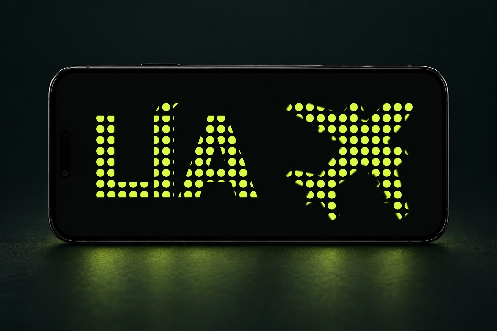

01 / Producto digital · Web y Android
TypeGlow
Una pantalla. Un mensaje que se ve.
Web publicada
Ver caso
El problema
En un aeropuerto, un concierto o un lugar ruidoso, a veces hace falta que un mensaje se vea. TypeGlow convierte el móvil en un cartel grande, animado y legible, con una primera experiencia que no exige registro.
Las decisiones
El editor parte de situaciones de uso y muestra el resultado al momento. Los estilos premium se pueden probar antes de comprar. Web y app nativa comparten lógica estable, mientras cada una conserva una interfaz adaptada a su plataforma.
Dónde está
La web está publicada e incluye frases offline, exportación y funciones para varias pantallas. El trabajo abarca también la app Android, pagos, SEO y ASO. La métrica elegida es el uso efectivo del cartel; el reto siguiente es aprender de su uso real.